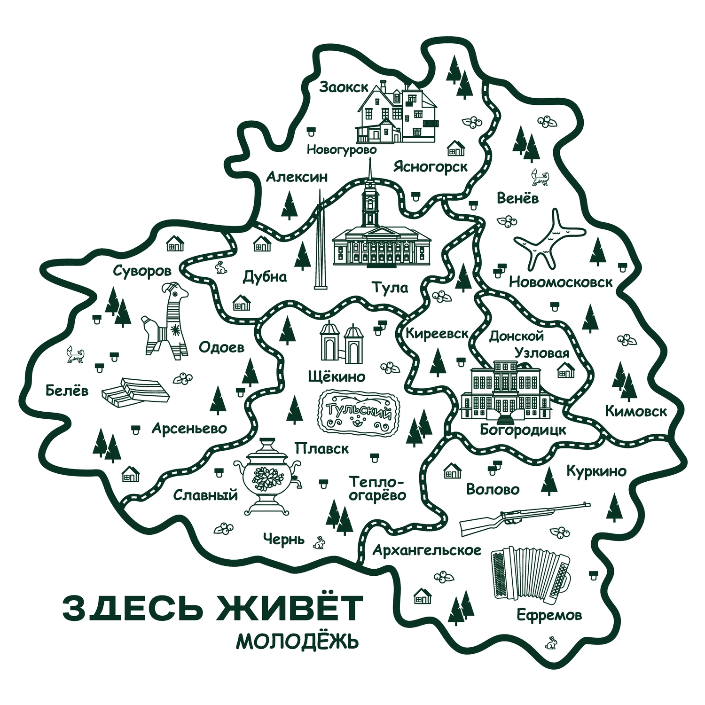

Молодёжные советы · Тульская область
Твой город.
Твоя команда.
Муниципалитеты Тульской области — пространство для инициатив, совместных проектов и развития молодёжных советов на местах.
27региональный уровень и муниципалитеты
—советов с подтверждённым статусом
—баллов в муниципальном рейтинге
Карта муниципалитетов
Наведите курсор на отметку, чтобы увидеть статус молодёжного совета. Нажмите на неё, чтобы открыть страницу муниципального совета.

Совет действует Конкурс объявлен Статус уточняется
Выберите отметку на карте для перехода к странице соответствующего совета.
Муниципалитеты
Найди свою территорию в списке. Данные о статусах будут добавляться по мере подключения советов.
Ничего не найдено. Попробуй изменить запрос.
Рейтинг муниципалитетов
Баллы появятся после подключения муниципальных советов и проверки отчётов.
| Место | Муниципалитет | Статус | Баллы |
|---|---|---|---|
| — | Данные ещё не опубликованы | Ожидает данных | — |
Рейтинг будет заполняться только подтверждёнными данными. Баллы и статусы не подставляются автоматически и не являются вымышленными.